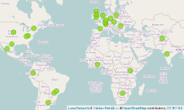

Mission
Making geospatial education and opportunities accessible to all

Helena Mitasova
NCSU
OSGeoREL
at
Center for Geospatial Analytics
May 2016
Global network of academic research and education laboratories and government/industry partners
some global network image


6 founding labs in 2011
over 100 Geo fori All labs globaly in 2016 
show as animation? make it on big mac at high res
Website http://www.geoforall.org
Wiki http://wiki.osgeo.org/wiki/Edu_current_initiatives
Global and regional mailing lists

http://www.geoforall.org/how_to_join/
pulolimgvideoiframe

section element class to:
imgtext for image on lefttextimg for image on right<section class="imgtext">
section element
iframeGRASS GIS looks back to the longest development history in the FOSS4G community. Having been available for 30 years, a lot of innovation has been put into the new GRASS GIS 7 release...
Left
div element which then contains more elementsRight-aligned